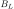
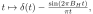
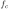
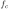
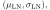

Next: October – Fast Fourier Up: Blog posts 2021 Previous: August – Radio Waves Contents
I thought that it would be nice to write about some purely mathematical subject today, so I decided to briefly discuss the famous Poisson process and its properties under a transformation.
It is a well-known fact that some point processes converge to the Poisson point process after a sufficient amount of right transformations. This is of course why the Poisson p.p appears everywhere in nature; for example, grain of sands in a sand castle – made by a child at a beach on a sunny day – will eventually spread by wind (or water) around the beach. The grains will be randomly displaced here and there forming something approximating a realization of a Poisson p.p., even though the original pile was more ordered.
Let's play the game with a pile of sand spreading to a flat area by random translations of the grains.
Consider a pile of sand at origo. Furthermore, let's assume that the pile is small enough (compared to unit distance) so that it is concentrated in a single point. Let's make a natural assumption that the amount of grains in the pile is Poisson distributed. Now our pile of sand is a Poisson point process concentrated in the origo.
Suppose that after a while, wind moves individual sand grains from the pile directing them with a uniformly distributed angle and to a random normally distributed distance between
 . In other words, the probability that a sand grain is moved from the origo to a location
. In other words, the probability that a sand grain is moved from the origo to a location  inside a circle
is
inside a circle
is

After a random translation of all points the Laplace functional of the distances of the points is
|  |  | |
![$\displaystyle = \mathbb{E}_n \left[ (2 \pi)^{-n/2} \int_0^{\infty} \dots \int_0...
...left[ -f(y_i) \right] \frac{2}{\sqrt{2 \pi}}e^{-y_i^2} dy_1 \dots d y_n \right]$](img19.svg) |
||
![$\displaystyle = \mathbb{E}_n \left[(2 \pi)^{-n/2} \left( \int_{0}^{\infty} 2\exp \left[ -f(y) - y^2 \right] dy \right)^n\right]$](img20.svg) |
||
Evaluating the Poisson Laplace functional
 of the sand pile with
 we get
of the sand pile with
 we get
 |
![$\displaystyle = \exp \left[ -\int_{\mathbb{R}^2} 1 - e^{\log \left( \int_{0}^{\...
...t[ -f(y) \right] \frac{2e^{-y^2}}{\sqrt{2 \pi}} dy \right) }\Lambda(dx) \right]$](img25.svg) |
|
![$\displaystyle = \exp \left[-\int_{\mathbb{R}^2} \left(1 - \int_{0}^{\infty} \exp [-f(y)] \frac{2e^{-y^2}}{\sqrt{2 \pi}} dy \right) \Lambda(dx) \right]$](img26.svg) |
||
![$\displaystyle = \exp \left[-\int_{\mathbb{R}^2}\int_{0}^{\infty} \left(1 - \exp [-f(y)] \right) \frac{2e^{-y^2}}{\sqrt{2 \pi}}dy \Lambda(dx) \right]$](img27.svg) |
||
|  |
where  denotes the expected number of points in the sand pile (Campbell's theorem). But the formula
denotes the expected number of points in the sand pile (Campbell's theorem). But the formula  is the Laplace functional of the Poisson p.p. on
with a density parameter
is the Laplace functional of the Poisson p.p. on
with a density parameter
 As the direction of the translation of a sand grain was uniformly distributed, we can conclude that the sand grains are Poisson distributed according to the Poisson p.p. with the two-dimensional multivariate Gaussian distribution as the density.
As the direction of the translation of a sand grain was uniformly distributed, we can conclude that the sand grains are Poisson distributed according to the Poisson p.p. with the two-dimensional multivariate Gaussian distribution as the density.
The result above applies to any translations as long as the translation is independently applied to every point (or grain); the Poisson point process remains Poisson in a transformation. Here we had to make the Poisson assumption also for the pile so that the result above could be derived. But indeed, we can show that non-Poisson processes approach Poisson p.p. when the points are translated in a certain manner. However, I leave this is out of the scope of this blog entry for now, and take the remark made here as a simple (possibly a bit weird) example of the universality of the Poisson point process.
.
References:

![\includegraphics[width=\linewidth]{spread.eps}](img31.svg)